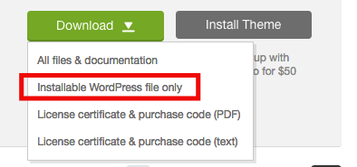
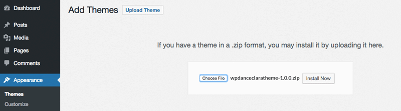
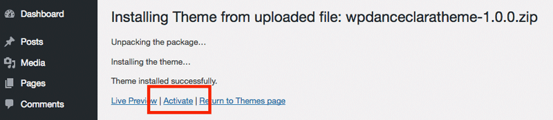
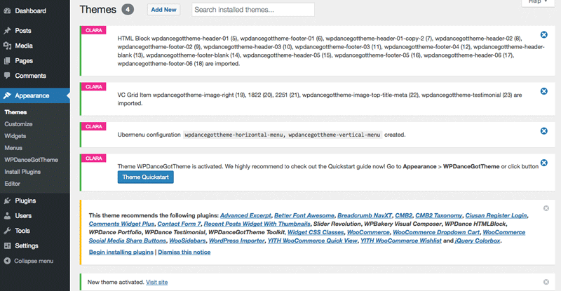

Theme Installation¶
Video Installing Theme Step By Step¶
Installation¶
Go to https://themeforest.net/downloads and download the theme Installable WordPress file only:

Login to your WordPress admin, go to Appearance > Themes, click button Add New. Then click button Upload Theme, choose the zip file and click button Install Now start uploading the theme:

Click Activate to activate the theme:

If you see below messages, it means the theme is installed and activated successfully:

Click the button Theme Quickstart appear above to open the Quick Start page.